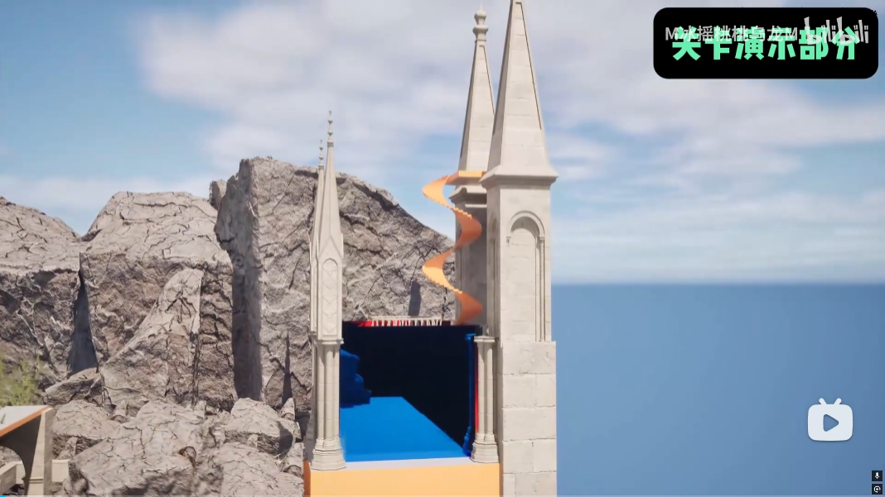
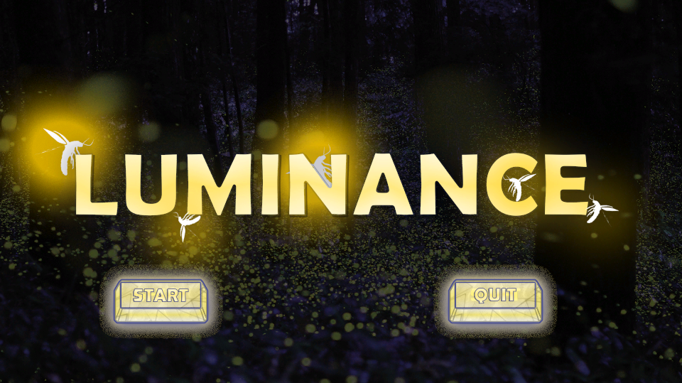

体验目标先行
先明确希望玩家产生的感受与行为，再倒推空间结构、玩法投放、信息层级与节奏变化，避免为机制而机制。
专注城市开放世界、第三人称动作冒险与玩法驱动的空间设计。
Northeastern University · Game Science and Design · GPA 3.9/4.0
从空间、玩法与玩家目标出发，构建可理解、可验证、可落地的关卡体验。
我拥有城市开放世界正式项目及网易、腾讯商业项目实习经验，能够完成从体验目标拆解、关卡白盒与玩法原型，到文档撰写、POI推进和跨部门沟通的完整工作链路。
个人项目则持续验证箱庭架构、空间引导、3C、战斗解谜与节奏控制。
关卡不是静态空间，而是玩家理解目标、形成判断并付诸行动的过程。
先明确希望玩家产生的感受与行为，再倒推空间结构、玩法投放、信息层级与节奏变化，避免为机制而机制。
利用地标、视线、动线、高低差与环境反馈，让玩家在观察和行动中自然理解方向、风险与机会。
尽早把想法变成可游玩的白盒，通过尺度、3C参数、流程时长与玩家测试持续验证，而不是停留在文字设想。
把玩法规则和体验意图转化为明确文档、蓝图原型与验收标准，并与美术、系统、AI和文案共同推进制作。
以关卡策划为核心，从体验目标、白盒和玩法原型出发，推进内容进入可开发、可验证、可落地的制作流程。
友塔游戏
网易互娱 · Hex工作室
腾讯游戏 · 天美工作室
盛趣游戏
长期体验动作角色扮演、开放世界与多人竞技游戏，并通过时长、完成度和专项拆解持续积累对空间、战斗、探索与玩家成长的理解。
《黑暗之魂1》 · 100h · 完成关卡拆解；《战神4》 · 50h · 一周目全通；《黑神话：悟空》 · 150h · 三周目、全成就白金；《怪物猎人：世界》 · 162h · 142级；《怪物猎人：荒野》 · 120h · 单武器毕业、89级。
《原神》 · 2年半 · 58级 · 付费投入10000+；《艾尔登法环》 · 200h · 全成就白金；《燕云十六声》 · 95级 · 全地图探索度80%；《无限暖暖》 · 71级 · 心愿原野大地图全任务通关；《塞尔达传说：荒野之息》 · 150h · 通关。
《神秘海域4》 · 43h · 一周目全通；《最后生还者 Part I》 · 一周目全通。
《双人成行》 · 25h · 通关；《双影奇境》 · 32h · 通关。
《碧蓝幻想 Relink》 · 130h；《崩坏：星穹铁道》 · 66级 · 付费投入5000+；《Persona 5 皇家版》 · 50h。
《英雄联盟》 · 10年 · 白金段位；《云顶之弈》 · 美服白金段位；《无畏契约》 · 1年 · 美服白金段位。
《博德之门3》 · 150h · 硬核难度通关。




领导6人团队完成3D闯关逃脱游戏，设计飞行、点灯、闪光机关、单向门、风力与旋转风车等机制。


欢迎联系我讨论关卡策划、开放世界POI与第三人称动作关卡机会。